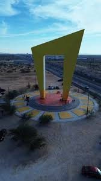
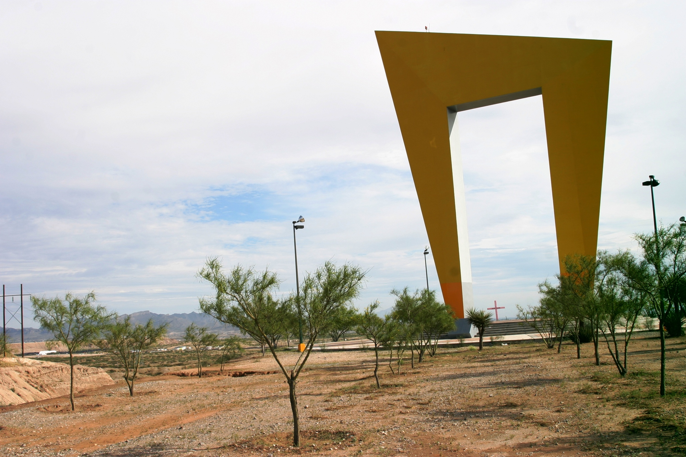
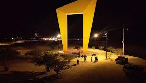
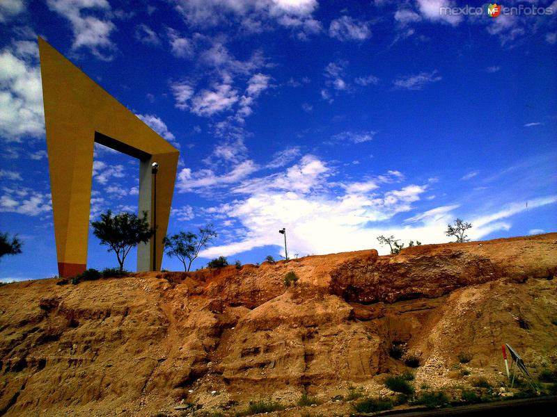

La Puerta a Ciudad Juárez 🏛️
Inaugurada en 2007, La Puerta a Ciudad Juárez es más que un monumento; es un símbolo de modernidad y un punto de referencia para la ciudad. Diseñada por el arquitecto Ricardo Legorreta, su construcción se llevó a cabo para dar la bienvenida a los visitantes que llegan a la ciudad por la autopista Panamericana. Representa el crecimiento urbano y la constante evolución de Ciudad Juárez, conectando a locales y visitantes con su historia y patrimonio.
Estructura y Arquitectura 🏗️
Diseño Arquitectónico
El diseño de **La Puerta** combina elementos de la arquitectura moderna y la identidad cultural de la región. Sus líneas rectas y su imponente altura de 45 metros crean un efecto visual que simboliza la apertura y el futuro. Es una obra maestra de la arquitectura contemporánea que se integra perfectamente en el paisaje desértico, ofreciendo una vista impresionante al atardecer.
Materiales y Simbolismo
La construcción se realizó con **concreto reforzado y acero de alta resistencia**, materiales elegidos por su durabilidad y su capacidad para soportar las extremas condiciones climáticas del desierto. Estos materiales no solo garantizan la longevidad del monumento, sino que también reflejan la fortaleza y resiliencia de la gente de Ciudad Juárez, manteniendo un acabado estético que resalta tanto de día como de noche.

Significado Cultural ✨
El monumento no solo marca la entrada a la ciudad, sino que también es un poderoso símbolo de la identidad de Ciudad Juárez. Representa **la apertura, el progreso y el orgullo local**. Es un punto de encuentro para eventos culturales y cívicos, y un lugar que refuerza la conexión entre ciudadanos y visitantes. Su presencia imponente en la entrada de la ciudad ha convertido a La Puerta en un ícono de la resiliencia y la prosperidad de la región.
Iluminación Nocturna 💡
Una de las características más destacadas de La Puerta es su **espectacular sistema de iluminación nocturna**. Durante la noche, el monumento se ilumina con colores que cambian según la ocasión o festividad. Esta iluminación no solo resalta su diseño arquitectónico, sino que también la convierte en una baliza de luz y esperanza visible desde varios kilómetros de distancia. Es un espectáculo visual que ofrece una experiencia diferente para quienes la visitan al anochecer.
Visitas y Turismo 👣
La Puerta es un atractivo turístico de visita obligada. Los visitantes pueden recorrer el área a pie, tomar fotografías y disfrutar de los espacios abiertos que la rodean. Es un lugar ideal para un paseo tranquilo o para capturar una instantánea del paisaje urbano y natural de Ciudad Juárez. Además, su ubicación estratégica la hace un punto de partida perfecto para explorar otros monumentos y puntos de interés cercanos.
